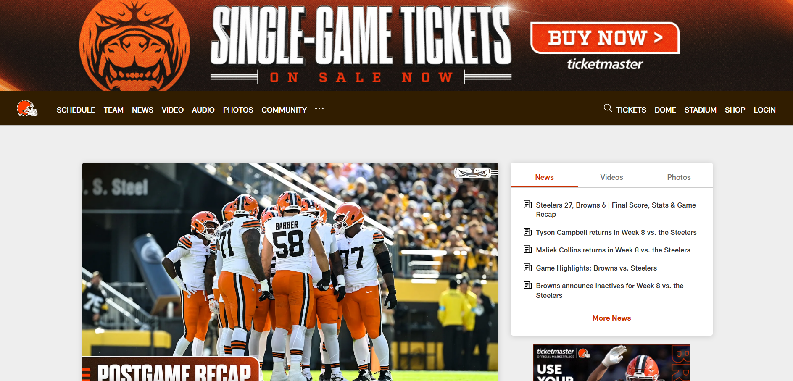

Website Overview
-
What is the URL of the website?
https://Clevelandbrowns.com - What is the name of the website? Official Cleveland Browns Website
- Who is the site's target audience? Fans of the Cleveland Browns football team, Sports enthusiasts, Fantasy Football players and media personnel.
- How is the site organised? This Website uses hierachial organisation to display its information. It includes things such as a home page, links, and isnt too shallow or too deep.
Design Overview
- Which CRAP design principles does the site use? This website uses Contrast and Proximity principles. High contrast is used with the background being brown and the interactive buttons being orange.
- What is the Audit score according to the accessiblity checker? 10/100
- What is the sites efficiency? Can users perform tasks quickly? The layout of this website is very straight foward, all of the links are very accessible and easy to find.
- How is the engagement? is pleasant to use and appropiate for its industry? The engagement of this website is great, The layout is very user friendly, it is layered with images and is very enjoyable for sports fans looking for specific information.